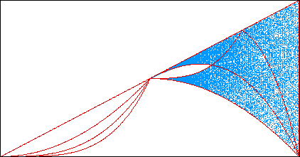

Much of the structure of the ten t map bifurcation daigram can be understood by looking at the first few iterates.
For example, taking
superimposed on the bifurcation diagram in light blue. Note how the main features of the bifurcation diagram are outlined by these first few iterates.
|  |
Return to Bifurcation Diagrams for the Tent Map and the Logistic Map.